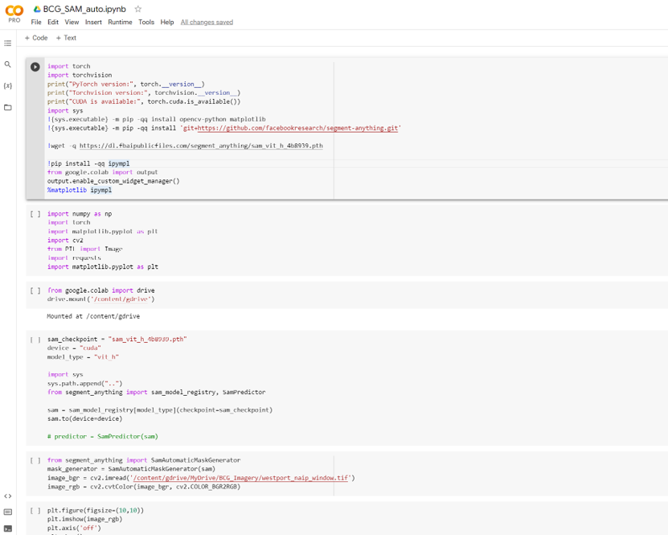
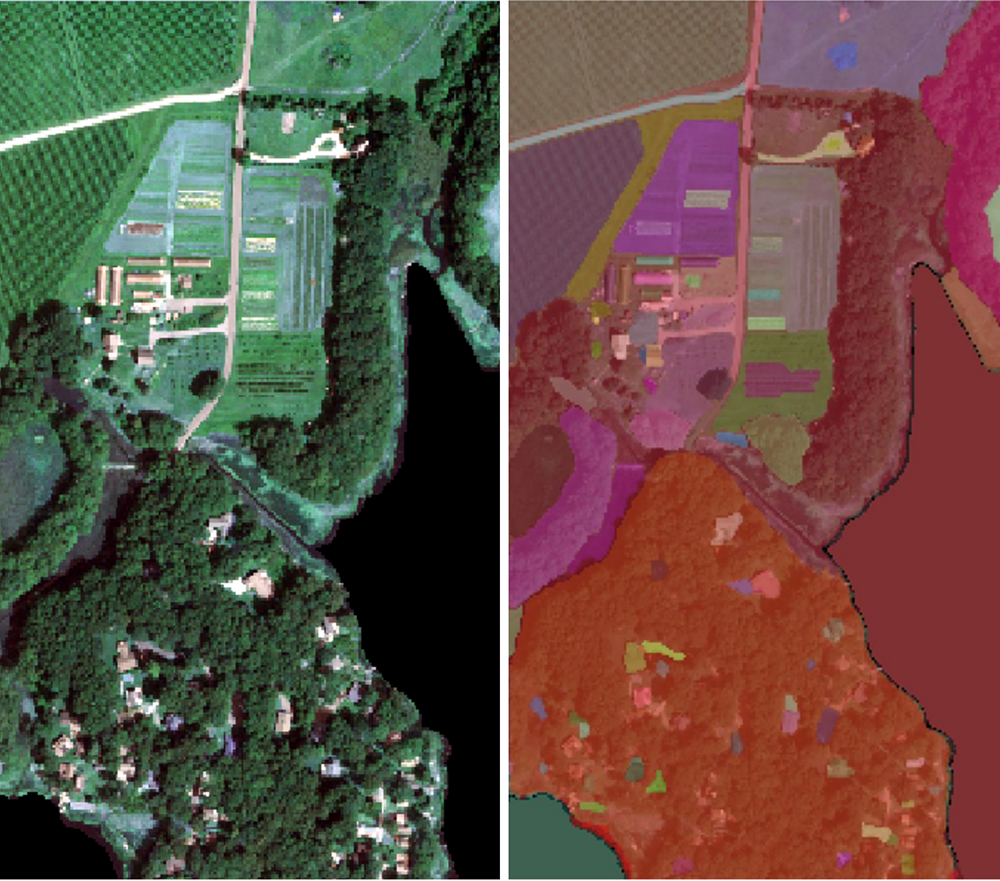

Pioneer Study of Mapping Greenhouses in Westport, Massachusetts
Yao-Ting Yao, Ashna Siddhi, Brenner Burkholder
Advanced Remote Sensing Project
Massachusetts has a thriving greenhouse and nursery industry, ranking in the top 10 states for greenhouse and nursery sales value per square mile. According to the 2017 Census of Agriculture report, the total area of greenhouse vegetables and fresh-cut herbs is 1,755,716 square feet.
As part of the efforts to enhance food sustainability, this project aimed to assist the Boston Consulting Group's initiative by developing a methodology for mapping greenhouses. To customize object detection models, Mahalanobis Distance soft classifier and Segmentation Classification (Support Vector Machine and Segmentation Anything Model) were employed. In order to assess accuracy, map assessments were conducted, comparing the performance of different methods. This article will emphasize the Segmentation Classification method.
Segmentation Anything Model (SAM)
The greenhouse in Massachusetts is widely separated. The area of the greenhouse is small compared to the large commercial greenhouse. The greenhouse is all reflected by the background, e.g. soil and grass. As a result, using a keen classification method can segment objects from background is vital important.
This research used the Segmentation Anything Model(SAM) as one of our segmentation methods. It was released by Meta’s FAIR lab. This foundation model for image segmentation was trained over 11 million images with 1 billion masks. I used to cv2 package to read the NAIP file and used AutomaticMaskGenerator to generate the segmentation result.
 